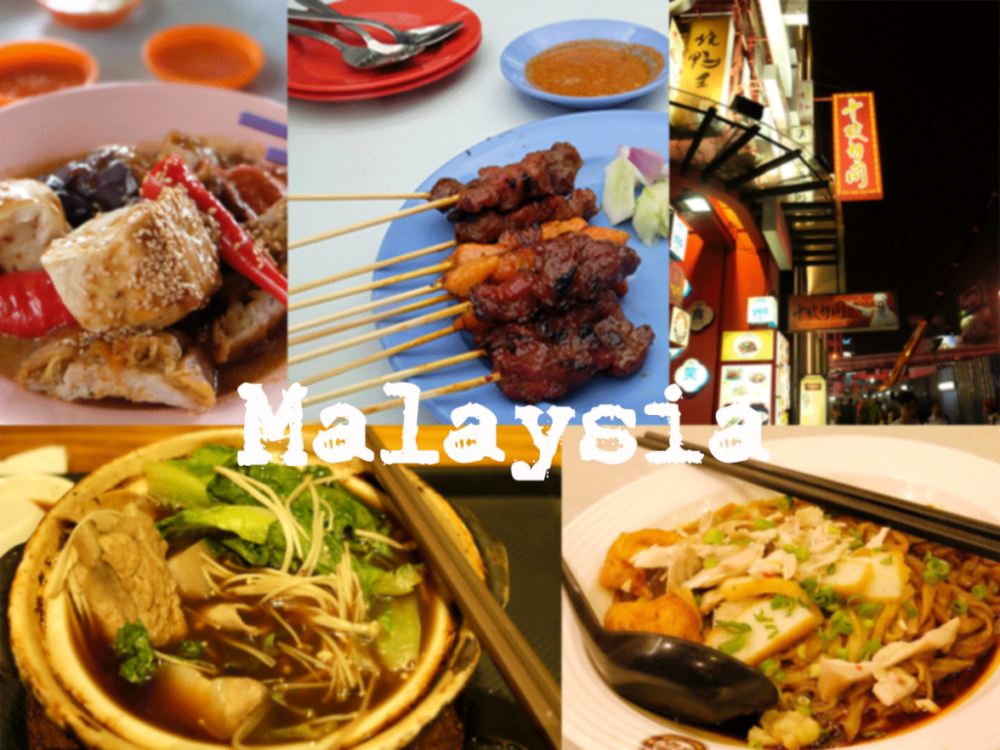
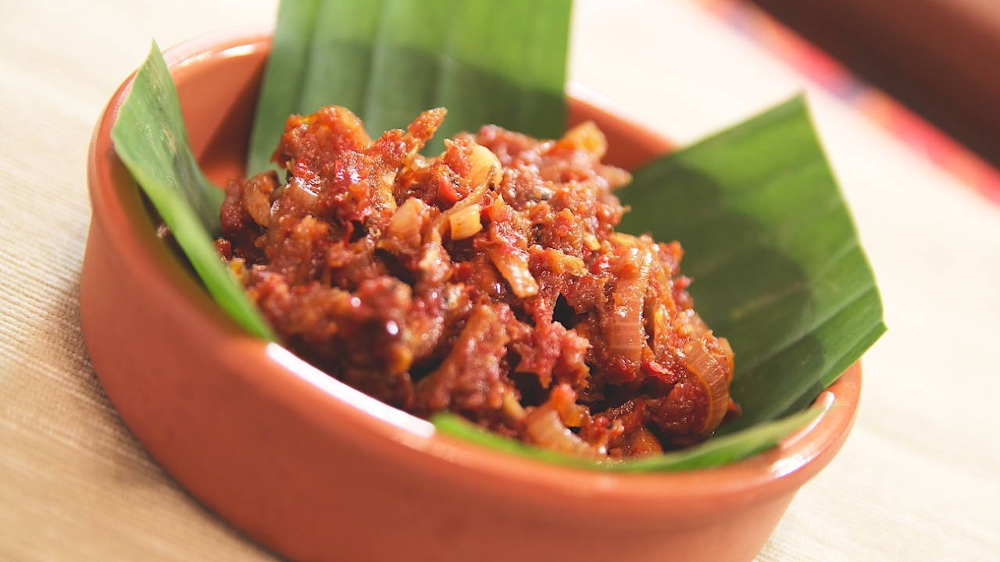
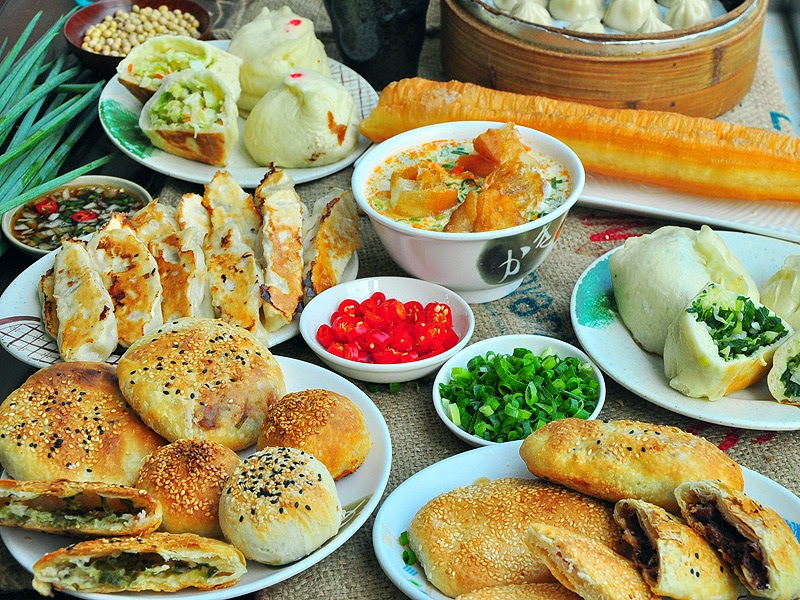
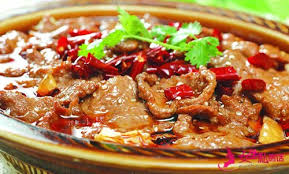

Dietary difference
受到文化以及氣候的影響，台灣的食物和馬來西亞的食物也有大大的不同，究竟有什麼不同?跟文化又有什麼關係?一起來看看吧!
馬來西亞，是一個多元種族的國家，他們相處得非常融洽，因此，街上的小吃充滿著各式各樣的選擇例如:馬來料理、華人料理、印度料理等等....台灣就是大同小異
在台灣，當老闆問我們要不要辣的時候，我們會自然地說"小辣、中辣或大辣"，但這在馬來西亞的同學的觀點來看，似乎覺得:蝦? 。Sambal是馬來西亞的調味品，光是"辣"的口味就分了幾10種呢!
「老闆一個漢堡，一個蛋餅，煎餃一份!」這是台灣的早餐日常，馬來西亞人比較不一樣，早餐比較以飯、麵為主，不過來到台灣，中午前可沒有這種東西喔!
馬來西亞是靠近赤道的一個熱帶國度，一年四季都在高溫下度過，馬來西亞的先民為了讓食物容易保存的久一點，將料理發展成較為「重口味」，除了食物較鹹、較辣，甚至還會「重甜」呢! 因此台灣的食物對他們來說是非常「清淡」的喔!
